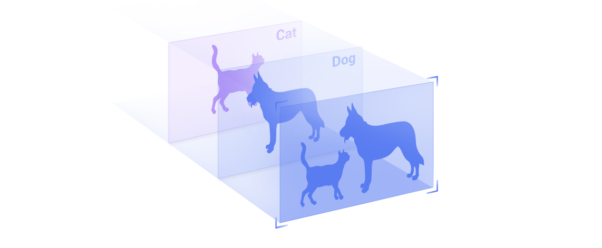
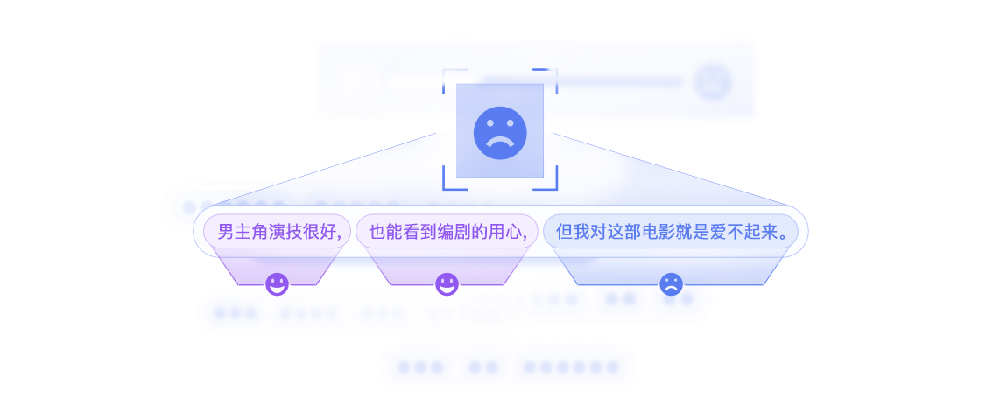
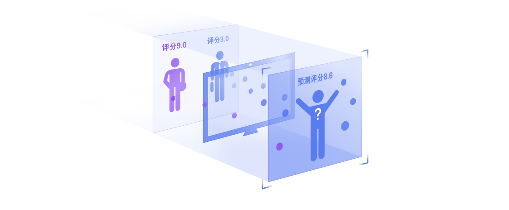

Fork me on Github
Fork me on Github丰富的算法服务
易用、高效、灵活、扩展性好

机器视觉
卷积神经网络可以识别图像中的主要对象，并输出分类结果

自然语言理解
利用LSTM网络从IMDB电影评论的中分析出评论者情绪的正面和负面

推荐系统
分析用户特征、电影特征、点评分数,预测新用户对不同电影的点评分数
技术和服务优势
易用性
为用户提供了直观、灵活的数据接口和模型配置接口
灵活性
支持CNN、RNN等多种神经网络结构和优化算法。简单书写配置文件即可实现复杂模型
高效性
在计算、存储、通信、架构等方面都做了高效优化，充分发挥各种资源的性能
扩展性
全面支持多核、多GPU、多机环境。轻松应对大规模训练需求
现在开始使用PaddlePaddle
易学易用的分布式深度学习平台